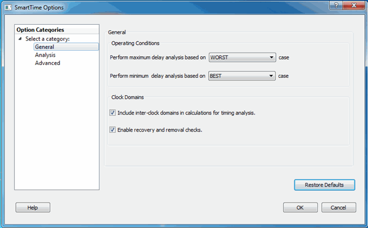
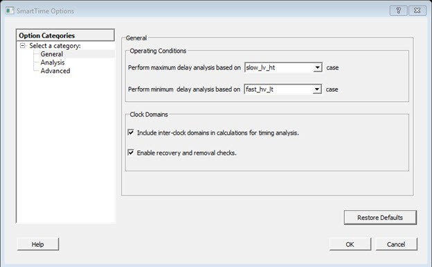

11.7 Advanced Timing Analysis
(Ask a Question)The following sections describe advanced timing analysis.
11.7.1 Understanding Inter-Clock Domain Analysis
(Ask a Question)When functional paths exist across two clock domains (the register launching the data and the one capturing it are clocked by two different clock sources), you must provide accurate specification of both clocks to allow a valid inter-clock domain timing check. This is important especially when the clocks are specified with different waveforms and frequencies.
When you specify multiple clocks in your design, consider whether the inter-clock domain paths are false or functional. If the paths are functional, perform setup and hold checks between the clock domains in SmartTime. Unless specified otherwise, SmartTime considers the inter-clock domain as false, and does not perform setup or hold checks between the clock domains.
If you have several clock domains that are subset of a single clock (for example, if you want to measure clock tree delay from an input clock to a generated clock), you must configure Generated Clock Constraints for each of the clock domains in order for SmartTime to execute the calculation and show timing for each of the inter-clock domain paths.
Once you include the inter-clock domains for timing analysis, SmartTime analyzes for each inter-clock domain the relationship between all the active clock edges over a common period equal to the least common multiple of the two clock periods. The new common period represents a full repeating cycle (or pattern) of the two clock waveforms as shown in the following figure.
For setup check, SmartTime considers the tightest relation launch-capture to ensure that the data arrives before the capture edge. The hold check verifies that a setup relationship is not overwritten by a following data launch.
11.7.2 Activating Inter-Clock Domain Analysis
(Ask a Question)-
From the SmartTime Tools menu, choose
Options.
The SmartTime Options dialog box appears (as shown below).
-
In the General category, check Include
inter-clock domains in calculations for timing analysis.
Figure 11-16. SmartTime Options Dialog Box for SmartFusion 2, RTG4, and IGLOO 2 Figure 11-17. SmartTime Options Dialog Box for PolarFire  - Click OK to save the dialog box settings.
11.7.3 Displaying Inter-Clock Domain Paths
(Ask a Question)After you activate the inter-clock domain checking for a given clock domain CK1, SmartTime detects automatically all other domains CKn with paths ending at CK1.
To display an inter-clock domain set:
- Expand the receiving clock domain of the inter-clock domain in the Domain Browser to display its related sets. For the inter-clock domain CK1 to CK2, expand clock domain CK2.
-
Select the inter-clock domain you want to expand from these sets.
All paths between the related two domains are displayed in Paths List in the same way as any register to register set.
11.7.4 Deactivating a Specific Inter-Clock Domain
(Ask a Question)- From the Tools menu, choose Constraints Editor > Primary Scenario to open the Constraints Editor View.
-
In the Constraints Browser, double click False Path
under Exceptions.
The Set False Path Constraint dialog box appears.
-
Click the Browse button to the right of the
From text box.
The Select Source Pins for False Path Constraint dialog box appears.
- For Specify pins, select by keyword and wildcard.
- For Pin Type, select Registers by clock names from the Pin Type drop-down list.
- In the filter box, type the inter-clock domain name (for example, Clk2), and then click Filter.
-
Click OK to begin filtering the pins by your criteria.
In this example, [get_clocks {Clk2}] appears in the From text box in the Set False Path Constraint dialog box.
- Repeat steps 3 to 7 for the TO option in the Set False Path Constraint dialog box and type Clk1 in the filter box.
- Click OK to validate the new false path and display it in the Paths List of the Constraints Editor.
-
Click the Recalculate All icon
 in the toolbar.
in the toolbar.
- Select the inter-clock domain set clk2 -> clk1 in the Domain Browser.
- Verify that the set does not contain any paths.
11.7.5 Changing Output Port Capacitance
(Ask a Question)Output propagation delay is affected by both the capacitive loading on the board and the I/O standard.
To change the output port capacitance and view the effect of this change in SmartTime Timing Analyzer, see the following example. The following figure shows a delay of 6.603 ns from DFN1 to output port Q based on the default loading of 5 pF.
If your board has an output capacitance of 15 pf on Q, perform the following steps to update the timing number.
- Open the I/O Attribute Editor and change the output load to 15 pf.
- Select File > Save.
- Select File > Close.
- Open the SmartTime Timing Analyzer and confirm that the Clock to Output delay changed to 5.952 ns.